Einleitung
Die Hough-Transformation ist eine Technik, die dazu dienen soll,
geometrische Merkmale aus einer Menge von Punkten herauszufiltern.
Ihr Grundprinzip lässt sich mit einer Art Abstimmung vergleichen.
Dabei werden für jeden Token aus einer Menge alle geometrischen
Figuren betrachtet, die durch ihn laufen. Diese Figuren erhalten
eine Stimme. Ziel ist es, Objekte mit vielen Stimmen zu finden.
In diesem Applet soll dies beispielhaft an Hand von Linien verdeutlicht
werden. Man sucht demzufolge alle Linien, die durch einen im Bildraum
gegebenen Pixel laufen. Diese enthalten eine Stimme im so genannten
Hough-Raum oder auch Akkumulator. Die Elemente dieses Raumes ähneln
einem Stimmbehälter. Dabei zählt jeder Behälter die Stimmen
für eine bestimmte Linie hoch. Dieser Prozess wird für jeden Pixel des
Ausgangsbildes wiederholt. Je mehr Stimmen ein Objekt am Ende
besitzt, desto mehr Punkte liegen auf der dazugehörigen Linie.
In den folgenden Schritten soll der gesamte Prozess visualisiert
und die einzelnen Schritte genauer erläutert werden.
Was genau ist der Hough-Raum?
Im Hough-Raum werden die Informationen aus einem Bild in etwas anderer
Form dargestellt. Jede im Bildraum vorhandene Gerade wird im Hough-Raum
nur noch als Punkt dargestellt. Dieser Punkt wird gewichtet und enthält
umso mehr Stimmen, je mehr Punkte auf der im Bild vorhandenen Linie liegen.
Um aus einer Linie im Bildraum einen Punkt im Hough-Raum zu erhalten,
sind einige mathematische Umformungen nötig:
1. Schritt
Eine Gerade hat die Gleichung f(x): y = mx + n.
Für einen festen Punkt P(x,y) lassen sich mit verschiedenen Werten für
m und n unterschiedliche Geraden darstellen, die durch diesen Punkt laufen.
Zuerst wird die Gleichung nach dem Anstieg umgestellt:
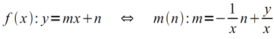
Davon ausgehend, dass x und y gegeben sind, entsteht nach dieser Umwandlung eine
Geraden-Gleichung. Diese Gerade gehört zum Hough-Raum und präsentiert
alle Linien, die durch den Punkt (x,y) im Bildraum verlaufen. Alle Punkte (m,n)
einer Gerade im Hough-Raum erhalten eine Gewichtung, beginnend bei eins. Diese
Wertigkeit gewinnt im weiteren Verlauf noch an Bedeutung.
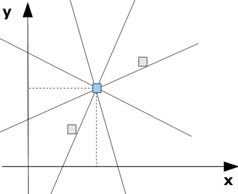 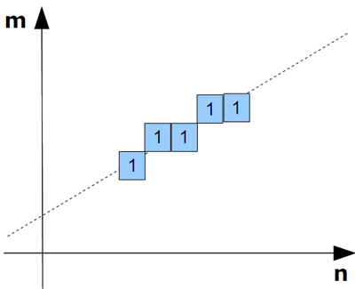
Links Bildraum mit gegebener Pixelmenge, rechts der Akkumulator/Houghraum
2. Schritt
Als nächstes wird der erste Schritt für alle Punkte im Bildraum fortgesetzt.
Falls eine Gerade existiert, die durch mehr als einen Punkt verläuft, hat diese
für alle Punkte die gleichen Werte für m und n. Demzufolge existieren für
diese Punkte im Hough-Raum mehrere Geraden, die alle durch den gleichen Punkt (m,n)
verlaufen müssen. Jede Funktion, die durch diesen Schnittpunkt verläuft,
erhöht dessen Wertigkeit um eins.
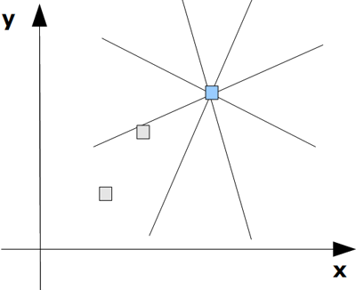 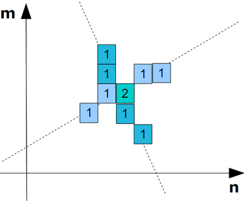
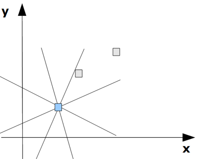 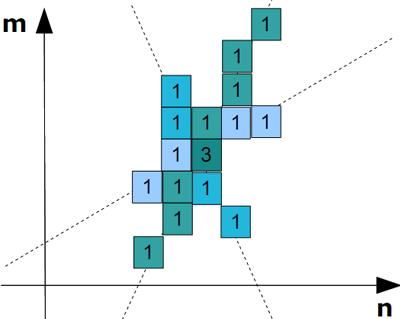
3. Schritt
Wenn alle Punkte des Bildes durchlaufen wurden, werden aus dem Hough-Raum diejenigen
Punkte ausgewählt, die die meisten Bewertungen haben. Diese gehören jeweils
zu einer Geraden im Bildraum. Die Anzahl an Punkten, die auf dieser Geraden liegen,
entspricht genau der im Hough-Raum angegebenen Wertigkeit.
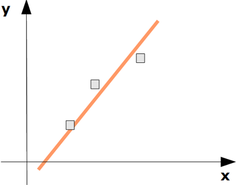 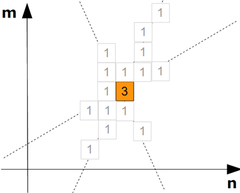
4. Schritt
Die Umstellung der Geradengleichung nach m hat jedoch einen entscheidenden Nachteil.
Wenn ein Punkt direkt auf der x-Achse liegt, wird der Anstieg m demzufolge unendlich
groß. Das hätte wiederum zur Folge, dass auch der Hough-Raum unendlich groß wird
und eine Implementierung so nicht möglich wäre. Deswegen wird die Gleichung
noch ein weiteres Mal umgeformt. Die resultierende Gleichung beschreibt eine Linie durch
den kürzesten Abstand d zum Ursprung und den Winkel α zwischen Linie und x-Achse.
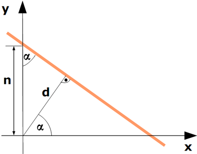
Somit ist eine Darstellung gefunden, die den Hough-Raum auf eine endliche Größe
begrenzt, da der Winkel α nur in einem Wertebereich von 0 bis 2π alle möglichen Linien
repräsentiert. Der kürzeste Abstand d der Linie zum Ursprung kann auch nicht
größer werden, als die Bilddiagonale. Daraus resultierend treten im Hough-Raum
keine Linien mehr auf, sondern nur noch Kurven fon folgender Form:
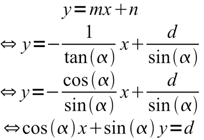
Ansonsten gibt es keine wesentlichen Veränderungen.
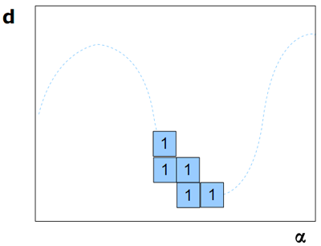